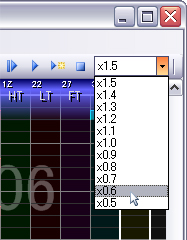

| 基本的な使い方 |
|---|
| DTXViewer で確認する |
ある程度譜面を作り終えたら、ときおり DTXViewer で内容を確認することをお勧めします。
メニューバーの [再生(P)] → [先頭から再生] を選択するか、あるいはツールバーの ボタンを押下すると、DTXViewer
が起動し、現在編集中の譜面を、自動的に最初から再生を開始します。
ボタンを押下すると、DTXViewer
が起動し、現在編集中の譜面を、自動的に最初から再生を開始します。
メニューバーの [再生(P)] → [現在の位置から再生] を選択するか、あるいはツールバーの ボタンを押下すると、DTXViewer
が起動し、現在編集中の譜面を、現在表示されている小節位置から再生を開始します。
ボタンを押下すると、DTXViewer
が起動し、現在編集中の譜面を、現在表示されている小節位置から再生を開始します。
ツールバーから、DTXViewer での再生速度を変更することができます。

メニューバーの [再生(P)] → [現在の位置からBGMのみ再生] を選択するか、あるいはツールバーの ボタンを押下すると、DTXViewer
が起動し、現在編集中の譜面を、現在表示されている小節位置から再生を開始します。
ボタンを押下すると、DTXViewer
が起動し、現在編集中の譜面を、現在表示されている小節位置から再生を開始します。
ただし、ここでは、BGMサウンド（WAVリストの「BGM」列に○印のあるWAVセル）しか発声されません。
メニューバーの [再生(P)] → [再生停止] を選択するか、あるいはツールバーの ボタンを押下すると、DTXViewer
の再生が停止します。
ボタンを押下すると、DTXViewer
の再生が停止します。